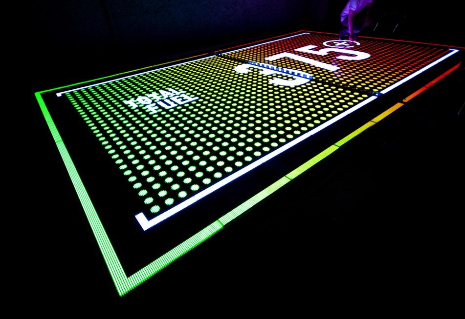

The Challenge
Nike needed to introduce the Nike+ Fuelband to a discerning Japanese consumer base by bridging physical retail environments with digital tracking technology, translating ambitious brand aspirations into an interactive experience.
The Approach
- Cross-functional orchestration. Managed a complex ecosystem of artistic directors, visual designers and a technology agency to deliver the brief.
- Feasibility & communication framework. Built a unified bridge aligning Nike's brand aspirations with technical constraints and spatial design realities.
- Concept-to-execution governance. Maintained strict experiential quality control from initial concept through prototyping, spatial layout and final on-site technical deployment.
The Impact
- Exceeded expectations. Delivered a seamless physical-digital experience that surpassed Nike's internal engagement and activation benchmarks.
- Cultural resonance. Generated major reach across Japanese mainstream media and organic social channels.
- Phygital blueprint. Proved the viability of real-time physical-digital interaction, setting a benchmark for launching wearable tech.
